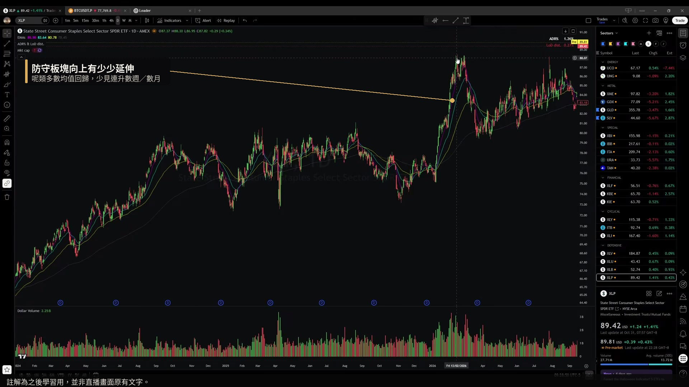
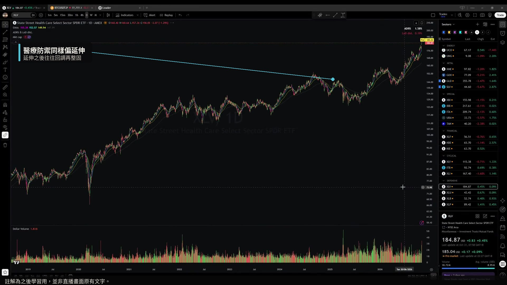

概要
防守板塊延伸之後，多數會回調再整固
1:16:53 佢留意到防守板塊向上有少少延伸。呢類多數愛做均值回歸，通常唔會連升數週或者數月；一有少少延伸，往往就會回調，再整固，甚至深回再下一輪。而家睇落有少少延伸，佢在問呢段可唔可以持續。畫面先後出現 XLV、XLP 日線。
圖一 · 主圖
必需消費：向上有少少延伸
直播 1:17:10

原話
One thing that I'm noticing is the defensive sectors is getting a little bit extended to the upside, and they're the one who love doing the mean reversion. Generally, most of the time they're not getting like a multi-week or multi-month rally. It's going like whenever they got a little bit extended, they're just going to pull back and then to build another base, or even like the big pullback and then another run and then another pullback. Now it's looking a little bit extended. Are they sustainable? Are they going to continue higher this time?
我留意到一點，係防守板塊向上有少少延伸，而佢哋係好愛做均值回歸嗰類。一般嚟講，多數時間唔會有連升數週或者數月嘅行情。通常一有少少延伸，就會回調，再整固另一個底，甚至深回，然後再跑、再回。而家睇落有少少延伸。佢哋今次可唔可以持續？會唔會再向上？
點樣讀
呢句係板塊習性觀察，最後兩個問句冇答死。唔好延伸成交易指示。
圖二
醫療防禦同樣偏延伸
直播 1:16:53

原話
One thing that I'm noticing is the defensive sectors is getting a little bit extended to the upside, and they're the one who love doing the mean reversion.
我留意到一點，係防守板塊向上有少少延伸，而佢哋係好愛做均值回歸嗰類。
點樣讀
XLV 同 XLP 都係防守板塊例子，結論係同一句：延伸之後多數會回。
附註
注意事項
- 只係板塊觀察，冇講入場或者平倉。畫面睇唔到成交價。
免責聲明：呢份係教育拆解，唔係投資建議，亦唔好當作買賣指示。